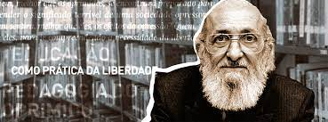

Ideologia
O método Paulo Freire estimula a alfabetização dos adultos mediante a discussão de suas experiências de vida entre si, através de palavras presentes na realidade dos alunos, que são decodificadas para a aquisição da palavra escrita e da compreensão do mundo.
Biografia

O educador e filósofo nasceu em Recife, no dia 19 de setembro de 1921, e ganhou reconhecimentoalhar pela educação. O pensador brasileiro, que ganhou diversos prêmios em reconhecimento aos trabalhos desenvolvidos, é lembrado mundialmente em trabalhos acadêmicos e deixou uma vasta obra sobre práticas pedagógicas. Ele morreu no dia 2 de maio de 1997
O educador era inteiramente contra a visão tradicional da educação (de transferência de conhecimento), que vê o professor como aquele que possui a sabedoria e o aluno como aquele que recebe essa bagagem. Paulo Freire propôs um método onde professores e alunos dialogavam e o aprendizado se fazia com base nas necessidades diárias reais dos alunos.
Quadrinho Paulo Freire
A critica sobre outro pensador porem com as mesmas criticas sem sentidos